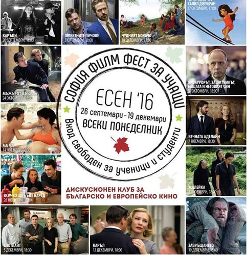

За вас, "Хлапета"
„София Филм Фест за учащи“ е създаден през 2009г. с цел да покаже на ученици и студенти върхоени постижения от европейското и национално кино. Достъпът до всяка прожекция е свободен, а след българските филми е осигурена и среща с автора. Чуждестранните заглавия се представят от киноведа и председател на Гилдията на българските кинокритици и от големият български режисьор и преподавател в НБУ – проф. Георги Дюлгеров.Домакин на дискусионният киноклуб „София Филм Фест за учащи“ ще е Дом на киното. Всички ученици и студенти могат да влязат безплатно.
Нещо като трейлър :)
Gandy / Hlapeta Художествен ръководител Ганета Атанасова Оператор: Калоян Божилов Калоян Мутафчийски Монтаж: Аманда Санчес Ас.режисьор: Ники Николов Режисьор...